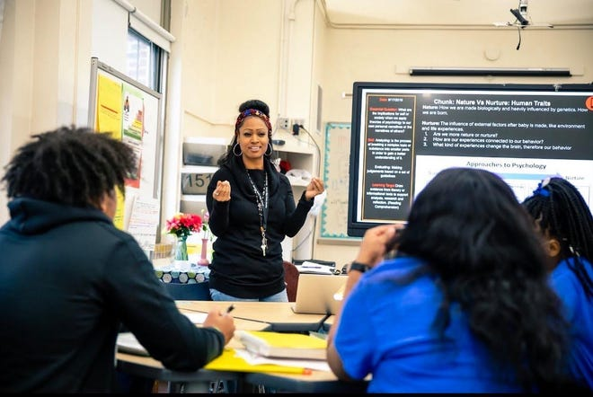
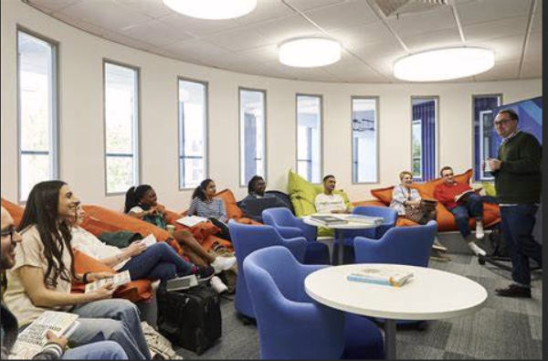
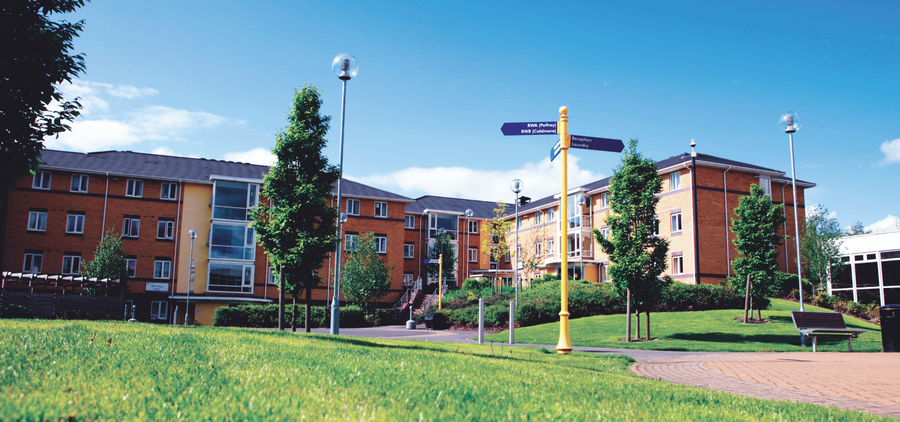
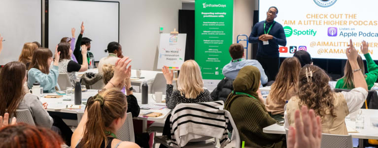

What to Expect at Our Open Day

1. Campus Tours [+]
Explore our state-of-the-art facilities, libraries, laboratories, and social spaces. Our Student Ambassadors will guide you through key locations, including:
- Lecture theatres and seminar rooms
- Library and study areas
- Sports facilities and student union spaces
- Accommodation and dining options
2. Meet Academics & Course Leaders [+]
Speak directly with our lecturers and tutors to get detailed insights into:
- Course content and structure
- Teaching methods and assessments
- Research opportunities
- Career pathways after graduation

3. Student Life & Support Services [+]
Find out what life at Wolverhampton is really like! Meet our Student Union and support teams to learn about:
- Student societies and clubs
- Mental health and well-being services
- Financial aid and scholarship opportunities
- Work placements and internships

4. Admissions & Application Guidance [+]
Our Admissions Team will be on hand to:
- Guide you through the application process (UCAS, direct applications, international admissions)
- Provide advice on entry requirements and qualifications
- Offer support on student finance and scholarships

5. Accommodation Tours [+]
Take a look at our modern, fully furnished student accommodation, including:
- Private and shared rooms
- On-campus and off-campus housing options
- Facilities such as kitchens, study areas, and social spaces

6. Interactive Workshops & Taster Sessions [+]
Engage in mini-lectures, workshops, and hands-on activities in your subject area. Experience what it’s like to study at Wolverhampton with practical sessions in fields such as:
- Business and Management
- Engineering and Technology
- Computing and Cybersecurity
- Nursing and Health Sciences
- Law and Criminology
- Creative Arts and Media